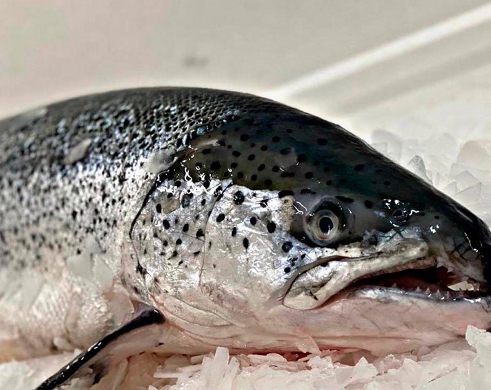
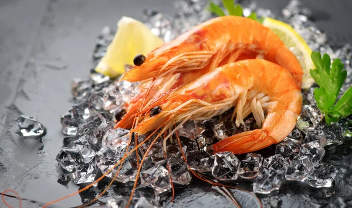

Ovelha
Ovelha
A ovelha, muito valorizada na culinária, oferece carne macia e saborosa; usada em assados, ensopados e grelhados, destaca-se pelo aroma marcante e textura suculenta deliciosa.

Salmão
O salmão é um peixe nobre, muito apreciado na culinária por sua carne rosada, sabor suave, textura macia e versatilidade em pratos grelhados, assados ou crus.

Camarão
O camarão é muito apreciado na culinária por seu sabor delicado, textura firme e versatilidade, sendo usado em risotos, massas, grelhados, frituras e diversas receitas tradicionais.